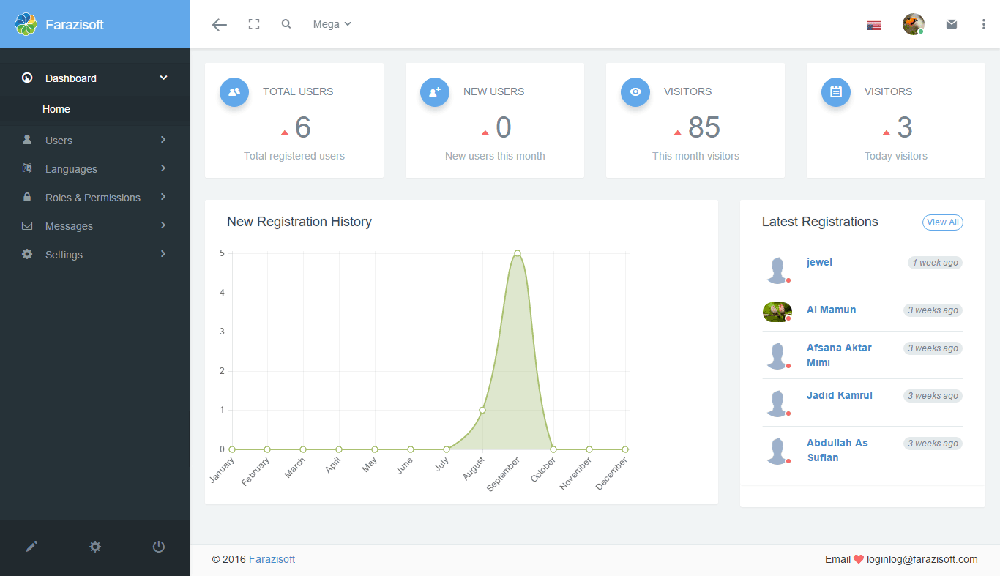

© Farazi soft
| Support : | info@farazisoft.com, md.jewelmia52@gmail.com |
| Developed by : | Farazi Soft |
Thank you for your interest.
Please read carefully the complete documentation before starting.
.env, change value of "DB_DATABASE,DB_USERNAME,DB_PASSWORD" .env, change value of "DB_DATABASE,DB_USERNAME,DB_PASSWORD" composer dump-autoload php artisan migrate:refresh --seed Login Infomation |
|---|
|
Admin Login User Login |
Administrator Dashboard : Administrators are be able to see some system status on their dashboard page and can see how many new users are registered in current month, number of total users, number of visitors current month and number of visitors today, these are:
User Dashboard : Users also have their dashboard where they can quickly navigate to some parts of the system And where they can see their activity graph for last Three weeks, these are:
User Registration Form Before Login : Users are able to access the registration form and create new account by click Register link, these are,
Users List : Users list page represent list of all system users. Users are searchable by almost all attributes,Print,PDF,Import XLS/CSV users list, Export XLS user list, these are,
Profile : Every user of the system, no matter what his role is, is able to update his profile. Link to user's profile is available at the top left down corner and top, these are,
Users Login Activity : User activity is recorded for every system user. Every time when someone update his profile information system store that activity into database and so system administrators can see what their users are doing, these are,
This system an available is dynamically language Add what's your need, You can follow this Tutorial. When you use the language please see example {{ trans('app.indexname')}}.
If your need Extend Languate indexname All translation files are located inside resources/lang folder. Within this directory there should be a subdirectory for each language supported by the application then you can to you this folder and then
/resources
/lang
/en
app.php
/bn
app.php
Language Add : Admin can create new Language, Update and Delete, these are,
Languages list : Admin can see Language list, these are,

Language Update : Admin can update Language, He can change right column value, these are,
Elegant comes with advanced roles and permissions (ACL) system based on Entrust package. A system is created to allow users to have only one role, and to allow different permissions for each role.
On roles section of the website administrators (or other users with appropriate permissions) can see and manage available system roles, as well as add unlimited number of new roles. Page with default system roles (Admin and User) is provided below.
Roles : Form for adding new role, Delete and edit existing roles, is provided below:
Permission : It comes with some default permissions but, if some of them does not fit your needs, they can be easily modify them. Adding new permissions is a breeze too, these are,
Most of this information users can send among registered users via message, but not every discussion needs to be seen by your entire team. That's provides a few different ways to have a conversation to direct messages and replay messages. User also can send multi messages at a time among registered user's. It has compose incipient Message from both inbox and sent.
Compose message : Messaging among registered and replay system. Link to user's Message form is available at the Down right corner, click this icon like these are,
Inbox message : Message send anyone to you, You can see inbox message and also get notification, these are,
Message details : You can see Details who send a message to you Or send you to anyone, these are,
The Setting module is to setup rudimental business information you possess. You can change your company name, logo and contact details etc..
General setting : General settings section is used for updating the application name, Logo, email, these are,
Chances are high that you would like to create your own pages inside the Elegant application. This section will explain in details everything you need to do to add your own page into the system.
The page we are going to add will be simple page that will display the list of all employee.
First thing we will have to do is to create new route for your page. We can do that by simply editing /routes/web.php file and adding the following code
anywhere inside the file. I've added it on top.
Route::get('employee', function () {
return "Employee will be displayed here.";
};
OR
Route::get('/employee', 'EmployeeController@index');
To verify that this code is actually working, you should go to yourwebsite.com/employee-list and you should see following text on your screen:
Employee list will be displayed here.This means that your route is now working properly, so we can proceed and create new controller that will handle the actual request, instead of using this closure, as we did in our example above.
One more thing, as you can see, we assigned a name to this route. This is very handy feature since we can now reference our route by name, and in case that we want to change the url to something else in the future,
will will be able to change it only inside our routes/web.php file, and everything will work without any broken links.
Note! You can find more about routes inside Laravel's documentation.
Creating new controller in Laravel is pretty easy. If you are familiar with the terminal, you can navigate to Vanguard's root folder and type the following command
Note! You can find more about controller inside https://laravel.com/docs/5.5/controllers.
php artisan make:controller EmployeeController --resourceAfter you execute this command, new controller will be automatically created for you and placed inside app/Http/Controllers folder. The file will be named EmployeeController.php.
You can also create the controller by manually creating new controller file inside app/Http/Controllers directory.
Now lets define our constructor and create new index method inside that controller. Controller will now look like following
namespace App\Http\Controllers;
use Illuminate\Http\Request;
class EmployeeController extends Controller
{
public function __construct()
{
// Allow access to authenticated users only.
$this->middleware('auth');
// Allow access to users with 'users.manage' permission.
$this->middleware('permission:users.manage');
}
/**
* Display a listing of the resource.
*
* @return \Illuminate\Http\Response
*/
public function index()
{
return "Hello from ActiveUsersController";
}
}
/**
* Show the form for creating a new resource.
*
* @return \Illuminate\Http\Response
*/
public function create()
{
//
}
/**
* Store a newly created resource in storage.
*
* @param \Illuminate\Http\Request $request
* @return \Illuminate\Http\Response
*/
public function store(Request $request )
{
//
}
/**
* Display the specified resource.
*
* @param int $id
* @return \Illuminate\Http\Response
*/
public function show($id )
{
//
}
/**
* Show the form for editing the specified resource.
*
* @param int $id
* @return \Illuminate\Http\Response
*/
public function edit($id )
{
//
}
/**
* Update the specified resource in storage.
*
* @param \Illuminate\Http\Request $request
* @param int $id
* @return \Illuminate\Http\Response
*/
public function update(Request $request, $id )
{
//
}
/**
* Remove the specified resource from storage.
*
* @param int $id
* @return \Illuminate\Http\Response
*/
public function destroy($id )
{
//
}
}
Since we now have the controller that will be responsible for our employee list, we are free to update the route we created in previous chapter to actually point to this index method
we just created, instead of using closure:
// /routes/web.php
Route::get('employee-list', 'EmployeeController@index');
//...You can probably see the pattern here. If we translate the route above into a sentence, it basically says something like this:
When someone try to access
yourdomain.com/employee-list, execute code that is located insideindexmethod fromEmployeeController.
Now, if you access yourdomain.com/employee-list from your browser, you will see the following response
Hello from EmployeeControllerOf course, since we added those two checks inside controller's constructor, you will have to be logged in and you must have employee.manage permission to access this page.
Note! You can find more about controllers inside Laravel's documentation.
Creating new Model in Laravel is pretty easy. If you are familiar with the terminal, you can navigate to Vanguard's root folder and type the following command
php artisan make:model Employee After you execute this command, new model will be automatically created for you and placed inside app folder. The file will be named Employee.php.
You can also create the model by manually creating new model file inside app directory.
Now lets define our table fields inside that model. model will now look like following
namespace App;
use Illuminate\Database\Eloquent\Model;
use App\Employee;
class Employee extends Model
{
/**
* The database table used by the model.
*
* @var string
*/
protected $table = 'employees';
/**
* The attributes that are mass assignable.
*
* @var array
*/
protected $fillable = ['first_name','last_name', 'email', 'password', 'username','phone',
'address', 'country', 'date_of_birth','gender','status'
];
}
Create table employees in database and see Migrations makes it even easier.
We will modify our controller to look like following:
namespace App\Http\Controllers;
use Illuminate\Http\Request;
class EmployeeController extends Controller
{
public function __construct()
{
// Allow access to authenticated users only.
$this->middleware('auth');
// Allow access to users with 'users.manage' permission.
$this->middleware('permission:users.manage');
}
/**
* Display a listing of the resource.
*
* @return \Illuminate\Http\Response
*/
public function index()
{
$employeedata = DB::table('emplyees')->get();
return view('employees.employee_list',compact('employeedata'));
}
/**
* Show the form for creating a new resource.
*
* @return \Illuminate\Http\Response
*/
public function create()
{
//
}
/**
* Store a newly created resource in storage.
*
* @param \Illuminate\Http\Request $request
* @return \Illuminate\Http\Response
*/
public function store(Request $request )
{
$input = $request->all();
$validator = Validator::make($request->all(), [
'email' => 'required|unique:users|max:255',
'username' => 'required|unique:users|min:6|max:255',
'password' => 'required|min:6|max:255',
]);
if ($validator->fails()) {
return Redirect::back()->withErrors($validator)->withInput();
}else{
Employee::create($input);
return Redirect::back()->with('msg_success', trans('app.insert_success_message'));
}
}
/**
* Display the specified resource.
*
* @param int $id
* @return \Illuminate\Http\Response
*/
public function show($id )
{
//
}
/**
* Show the form for editing the specified resource.
*
* @param int $id
* @return \Illuminate\Http\Response
*/
public function edit($id )
{
//
}
/**
* Update the specified resource in storage.
*
* @param \Illuminate\Http\Request $request
* @param int $id
* @return \Illuminate\Http\Response
*/
public function update(Request $request, $id )
{
//
}
/**
* Remove the specified resource from storage.
*
* @param int $id
* @return \Illuminate\Http\Response
*/
public function destroy($id )
{
//
}
}
As you can see, our join query is really simple. At the and of the index method, we will render our view, which we are going to create now.
In Laravel, all views are located inside resources/views folder. You can create unlimited number of sub-folders there, and group your views however you like it.
One great thing is that you can use dot notation when you want to render that view. That means that instead of / you can use "." when you want to reference your view from a controller.
In our controller code, we are referencing our view like employee.employee-list which means that we will create new file called employee-list.blade.php inside resources/views/users folder.
As mentioned, you can put your view anywhere inside the resources/views folder, but for what we are building, it looks like employee folder is the best place to put it.
Employee Registration form flow User Registration form:
Here is the source code of our employee list:
Note! Laravel uses Blade templating language which has it's own tags and ways of building the templates. It is really simple, and you can learn more about it here.
@extends('layouts.template')
@section('content')
@foreach($employeedata as $view)
Name
Username
Email Address
{{$view->first_name}} {{$view->last_name}}
{{$view->username}}
{{$view->email}}
@endforeach
@stop
Note! You can flow users list view fileresources/users/user_list.blade.php .
Let's explain what is happening here:
@extends('layouts.template') - means that this file is extending default layout called template, which is located inside resources/views/layouts folder.
@section('page-title', 'Active Users') - page title. Check <title></title> element inside app layout to see where it will be printed out.
@section('content') ... @stop - The actual content section. Everything that is inside those two tags (@section('content') and @stop) will be echoed out on the same place where @yield('content') is located inside app layout.
Inside this section we are just looping through the passed array of users and printing them out. We are using bootstrap media object just to make things a bit prettier. You can also click on user's avatar
and it will take you to the user profile page.
@section('styles') ... @stop - Anything that is located inside this section will be automatically placed inside the header (check app layout and search for @yield('styles')) of the page.
We are placing this css here just to make things easier and have everything in one file, but when you are building something, you will probably put the css inside public/assets/css/app.css file, since that's where Vanguard custom css is located.
If we open the employee registration page now, it will look like following:
If we open the employee list page now, it will look like following:
As you can see, we are able to access this page, but only by manually typing the url inside the browser's address bar. Lets add new link inside the sidebar menu that will point to our newly created page.
All we have to do is to edit resources/views/layouts/template.blade.php view file and add our link wherever we want it to appear. Since this section is accessible only for users with employee.manage permission, it makes sense
to put this new link right after "Users" link, between @permission('employee.manage') and it's @endpermission tag:
//...
@permission('employee.manage')
<li class="{{ Request::is('employee*') ? 'active open' : '' }}">
<a href="{{ route('employee.list') }}" class="{{ Request::is('user*') ? 'active' : '' }}">
<i class="fa fa-users fa-fw"></i> @lang('app.employees')
</a>
</li>
<li class="{{ Request::is('employee_form') ? 'active open' : '' }}">
<a href="{{ route('employee.registration') }}" class="{{ Request::is('employee-registration') ? 'active' : '' }}">
<i class="fa fa-users fa-fw"></i> Employee Form
</a>
</li>
@endpermission
Farazi Soft is always ready to serve its valued clients.
For any kind of after sales support or customization - Don't hesitate to contact us at:
E-Mail: md.jewelmia52@gmail.com
Skype: jewel_farazi
{kind=link}
{kind=link}
Configuration
This section contains some important configuration options that are specific to Elegant application. Since Elegant is using Laravel PHP framework, full configuration options for some framework specific stuff can be found inside Laravel documentation.
Social Authentication
If you want to allow social authentication for your users, you will have to define which social providers you want to allow. List of social providers is declared inside
config/service.phpfile. Elegant supports Facebook, Twitter and Google+ by default.The following code is an example of allowing all three default supported providers for Elegant application: